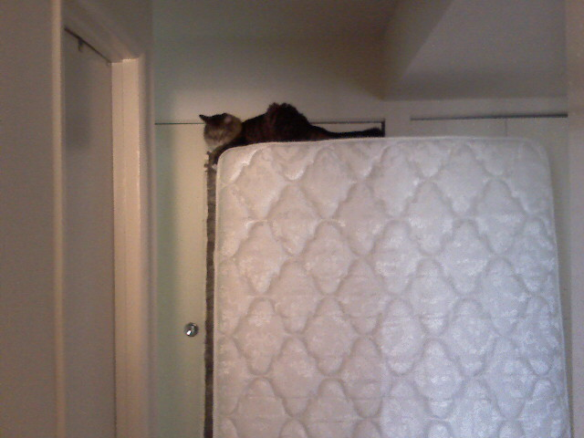

Another Late Night Another Sunset

Work kept me at the office late once again as we hurridly fix bugs before the big launch on Friday. These rays of light slipping away were captured as I was walking out of the Glenmont metro station.

Work kept me at the office late once again as we hurridly fix bugs before the big launch on Friday. These rays of light slipping away were captured as I was walking out of the Glenmont metro station.
It’s later than usual on my Metro ride home. I ‘ve been working on a big, big project at work that goes live on Thursday night.
Like most apartment dwellers, I get the occasional visits from roaches. After a couple of weeks of trying ineffective do-it-yourself measures like keeping things extra clean and plugging up any possible entrances, I decided to invest in a tube of roach gel.
After Googling around for the best way to kill roaches, I found NoMoreCockroaches.com explaining the Combat Roach Killing Gel that comes in a syringe is the best at dealing with the pests. How does the gel work? Roaches eat the gel and then retreat back to their nest where they die and other roaches eat the poisoned carcasses, thus eliminating the nest.

The best place to get this stuff is at Walgreens but since there are no Walgreens within a reasonable distance from my apartment, I had to order it online and wait for the mailman to bring it to my door.
I applied it to as many cracks and crevices in the kitchen before my week-long Montana vacation. Since I got back, I haven’t seen a single roach. They used to come out and scurry at night, but now they seem to be non-existent.

The only cons of the gel is it is a dark brown color (which looks like poo) which can clash with your room and it can be a little messy when applying. But aside from that, this stuff is well worth the price of $5.99 per tube which should be enough for a three bedroom apartment.
So forget the sprays, powders, and traps, Combat Roach Gel is all you need.
This is why I wear it down. Although I do kind of look like an early version of Bart Simpson.

Kristina and I got a free bed set from her aunt so we hauled it in from Hunt Valley. Puck is seen here sitting atop my old mattress that was later taken to Kristina’s parent’s house. I really hope someone makes a LOLcat out of this pic.

Kristina and I are heading to the Apple Store in the Montgomery Mall to pick up her iMac. It was in for repairs after frequently freezing up. I hope it is all better.

We’re visiting the Shedd Aquarium and while Kristina and I were walking to the main entrance we saw this hilarious statue featuring a man holding a giant fish that squirts water out of it’s mouth. The inside of the aquarium is just as neat. Now we are waiting for the dolphin show to start in the Oceanarium.


Continuing our whirl-wind tour of the windy city, Kristina and I visited Buckingham Fountain and The Bean. Lucky for us the rain cleared out and the sun came out which made for some fun pictures at the large reflective glob. Now it’s time to head to the Navy Pier so we can catch an architechture tour via boat and then some dinner.


Kristina and I are being typical Chicago tourists. First we took in the view from the Sears Tower. The big buildings are seen facing north from the tower and the traffic structure is to the west. We’re eating lunch now at Salseria and then it is off to The Art Institute of Chicago.


There are 16 animal heads and a Sacajawea statue here at the airport. I would expect nothing less from the Montana International Airport which only has 6 gates. Now Kristina and I are waiting for our flight to Chicago for two days before heading back to Maryland on Wednesday.